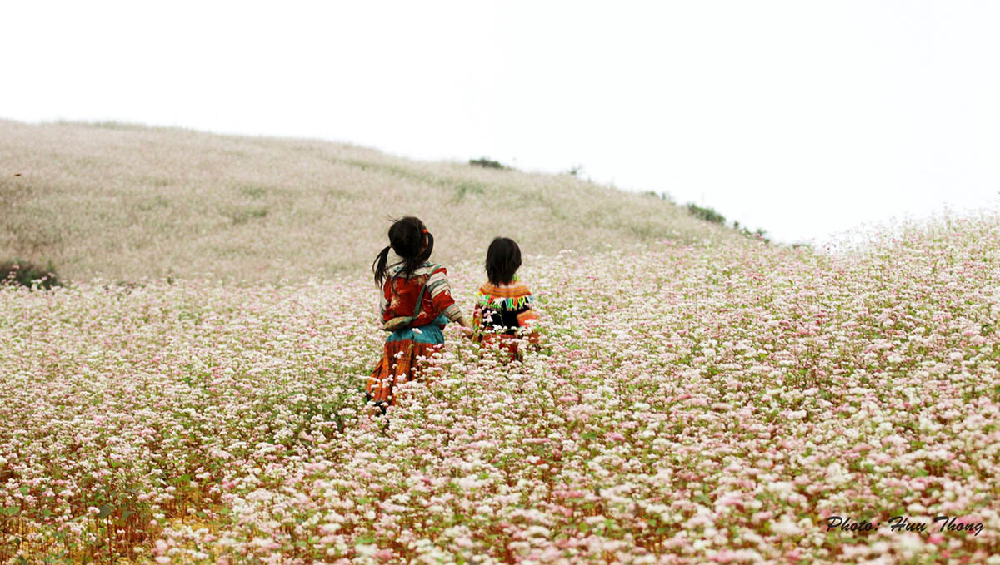
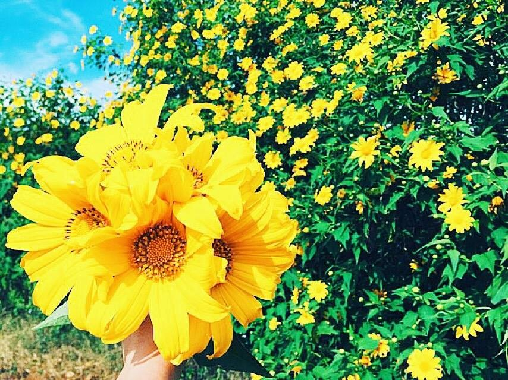
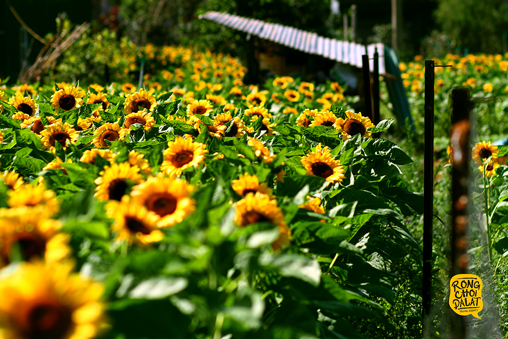

Tháng 10 Đà Lạt có hoa dã quỳ, Hà Nội gây thương nhớ với cúc họa mi... Thời điểm này, các miền đất trên khắp Việt Nam cùng rực rỡ với trăm hoa đua nở.
Hoa tam giác mạch (Hà Giang): Là loài hoa đặc trưng của núi rừng Tây Bắc, mùa hoa tam giác mạch nở thường vào khoảng từ tháng 10-12 hàng năm. Vùng đất nổi tiếng với những cánh đồng tam giác mạch bạt ngàn phải kể đến Hà Giang. Hoa tam giác mạch khi mới nở sẽ có màu trắng hồng phớt nhạt, sau đó chuyển dần qua hồng và tím hồng trước khi tạo hạt.
Rất nhiều địa điểm ở Hà Giang trồng hoa tam giác mạch như Hoàng Su Phì, Xín Mần, Lũng Táo, Phố Cáo, Sủng Là, Đồng Văn, Lũng Cú... Trong đó, Sủng Là được xem là nơi có những cánh đồng tam giác mạch đẹp nhất.
Hoa cúc họa mi (Hà Nội): Bước vào tháng 10, Hà Nội lại chìm trong sắc trắng tinh khôi của những đóa cúc họa mi. Loài hoa này sớm nở cũng sớm tàn. Một năm cúc họa mi chỉ nở một lần trong thời gian ngắn khoảng 2-3 tuần.
Người Hà Nội có lẽ rất thân thuộc với hình ảnh những chiếc xe đạp chở thúng hoa đủ màu, trong đó thấp thoáng những bó cúc họa mi nghiêng mình khoe sắc. Thời điểm cúc họa mi nở trắng đồng, giới trẻ Hà thành lại rủ nhau đến bãi đá sông Hồng, vườn hoa Nhật Tân, đồng hoa Quảng An... để chụp ảnh bên sắc hoa tinh khôi.
Hoa dã quỳ (Đà Lạt, Lâm Đồng): Được mệnh danh là thành phố ngàn hoa, Đà Lạt vào tháng 10 hấp dẫn du khách bởi sắc vàng rực rỡ của hoa dã quỳ. Làng hoa Vạn Thành, thị trấn Tà Nung, thác Voi, núi Langbiang, thị trấn D'Ran... là những địa điểm hoa dã quỳ khoe sắc vàng tươi ở Đà Lạt.
Hoa hướng dương (Nghệ An): Cánh đồng hoa hướng dương ở nông trường 19/5, xã Nghĩa Sơn, huyện Nghĩa Đàn (Nghệ An), là điểm đến quen thuộc của các tín đồ du lịch. Từ cuối tháng 10, hoa hướng dương ở đây bắt đầu nở và khoe sắc rực rỡ nhất vào khoảng cuối tháng 11, đầu tháng 12.
Giữa mảnh đất miền Trung khô cằn xuất hiện cánh đồng hoa rực rỡ bên dòng sông Sào thơ mộng, tạo nên bức tranh thiên nhiên hoàn mỹ.
Ngoài đồng hoa hướng dương ở Nghệ An, Đà Lạt cũng sở hữu cánh đồng hoa mặt trời đẹp nao lòng. Đồi hoa nằm trong khuôn viên nông trường công ty sữa Đà Lạt (huyện Đơn Dương). Mỗi năm, có 2 mùa hoa hướng dương nở, vào tháng 3-4 và tháng 10-12. Địa điểm này là nơi check-in bạn không thể bỏ sót khi tới du lịch tại thành phố trên cao nguyên. Giữa mảnh đất miền Trung khô cằn xuất hiện cánh đồng hoa rực rỡ bên dòng sông Sào thơ mộng, tạo nên bức tranh thiên nhiên hoàn mỹ.